Pneumonia from chest X-rays: CNN vs ResNet-18, opened up
Two deep networks detect pneumonia in 5,856 paediatric chest X-rays. Beyond accuracy, this project asks whether the
models look at the lungs (Grad-CAM, integrated gradients, occlusion), whether their probabilities can be trusted (temperature
scaling, reliability diagrams), whether they know when they are unsure (Monte-Carlo dropout), and how a threshold should be chosen
(decision curves), with bootstrap confidence intervals and paired tests throughout.
Research and education only. This is not a medical device and must not be used to diagnose anyone.
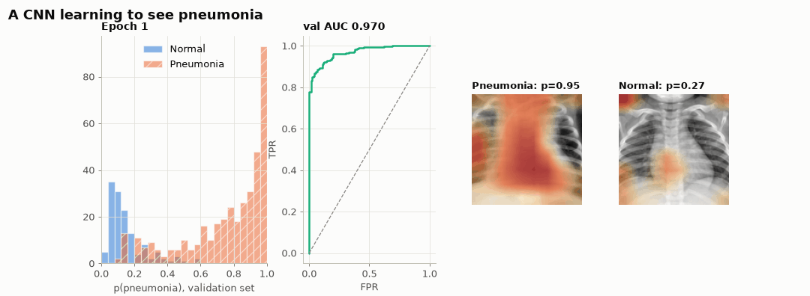
Results at a glance
Held-out test set of 624 X-rays (62.5% pneumonia). Means ± s.d. over 3 independent training runs; intervals are 95% stratified bootstrap.
0.991
ResNet-18 test AUC
0.982
CNN test AUC
+0.005
ΔAUC, 95% CI [+0.001, +0.010]
0.907
AUROC of MC-dropout entropy for flagging ResNet-18 errors
Model
AUC
Accuracy
Sensitivity
Specificity
F1
Params
CPU training
ResNet-18 · ImageNet transfer
0.991 ± 0.001
0.959 ± 0.006
0.976 ± 0.017
0.930 ± 0.016
0.967 ± 0.005
11.18 M
28 min / run
CNN · from scratch
0.982 ± 0.005
0.942 ± 0.007
0.958 ± 0.007
0.916 ± 0.009
0.954 ± 0.006
0.29 M
33 min / run
What the experiments show
Transfer learning wins, but only by a little. ResNet-18 reaches AUC 0.991 ± 0.001 against 0.982 ± 0.005 for the CNN. The paired bootstrap ΔAUC of +0.005 (95% CI +0.001 to +0.010) excludes zero. At τ = 0.5, however, McNemar's exact test finds no significant difference in errors (14 vs. 10 discordant X-rays, p = 0.54).
A 38× smaller model comes close. The 294 k-parameter CNN trained from scratch ends within 0.01 AUC of the 11.2 M-parameter ResNet. It is less stable across seeds, though: its AUC s.d. is 8× larger.
Calibration does not survive a shift in prevalence. Both models are already well calibrated (test ECE 0.02–0.03). Temperature scaling lowers validation NLL but raises test ECE (ResNet-18: 0.029 → 0.048), because validation is 74% pneumonia and test only 62.5%. A probability fitted at one hospital's case mix should not be trusted at another's.
Uncertainty flags errors. MC-dropout entropy is 0.60 bits on misclassified X-rays versus 0.10 bits on correct ones. Ranking by entropy detects ResNet-18's errors with AUROC 0.91, so deferring the most uncertain cases to a radiologist raises accuracy on the rest.
The threshold matters as much as the model. Youden's threshold chosen on validation data (τ = 0.013 for ResNet-18) gives 99.2% sensitivity but 85.9% specificity on test. Decision curves show both models beat "treat all" over the whole range of threshold probabilities.
Look at the saliency maps. On correct pneumonia cases, Grad-CAM and occlusion concentrate on the lung fields. On errors, the maps are often diffuse or centred on the heart and mediastinum, which is exactly the kind of shortcut a clinical audit should check for.
Visualisations
Every figure is generated by scripts/make_figures.py from the cached results, with one colour-blind-safe palette (classes also carry marker shapes or hatching).
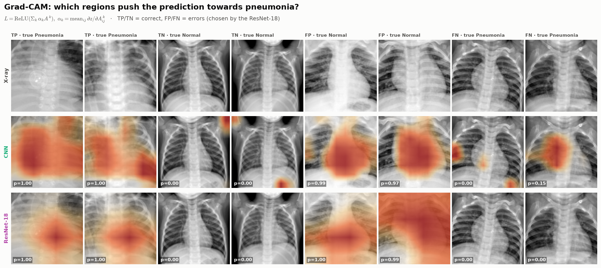
Grad-CAM for correct and incorrect cases. Heat marks the regions whose activations raise the pneumonia logit. Errors (FP, FN) are shown on purpose: they reveal what the models get wrong.
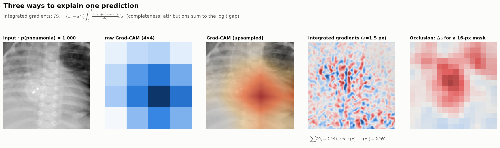
Three explanation methods for one X-ray. Grad-CAM is coarse (one value per feature-map cell); integrated gradients are pixel-exact and satisfy completeness; occlusion is model-agnostic and directly measures \(\Delta p\).
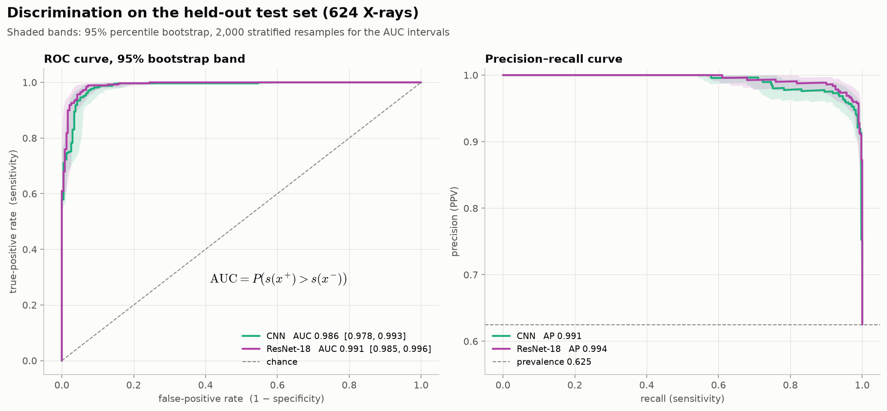
Discrimination: ROC and precision–recall curves with 95% bootstrap bands.
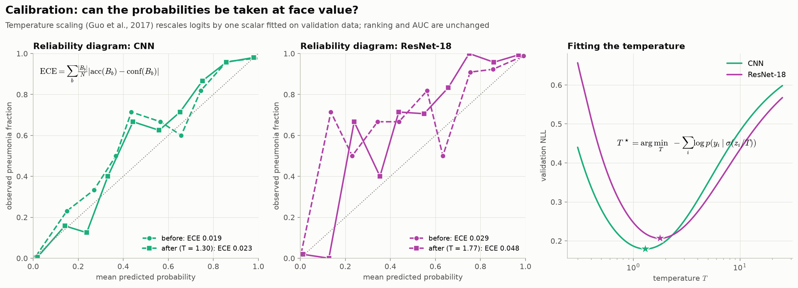
Calibration: reliability diagrams before and after temperature scaling, and the fitted temperature.
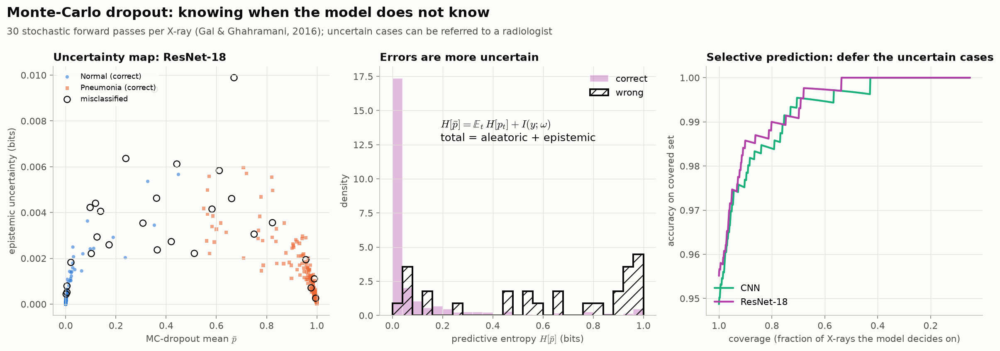
Monte-Carlo dropout: epistemic uncertainty, entropy of correct vs. wrong predictions, and accuracy when uncertain cases are deferred.
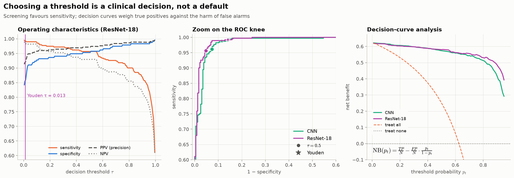
Thresholds as clinical choices: sensitivity, specificity, PPV and NPV against \(\tau\), the ROC knee, and decision-curve net benefit.
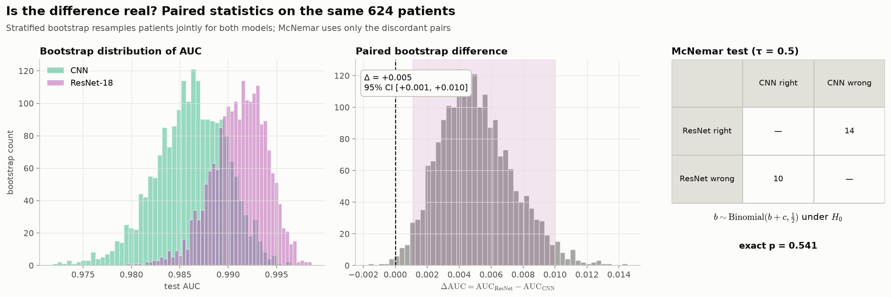
Is the difference real? Bootstrap distributions, the paired AUC difference and McNemar's exact test.
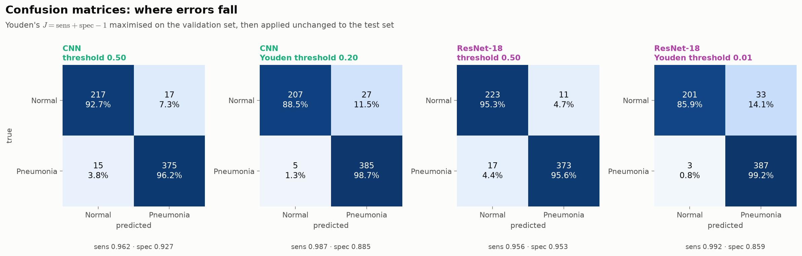
Confusion matrices at \(\tau=0.5\) and at the Youden threshold chosen on validation data.
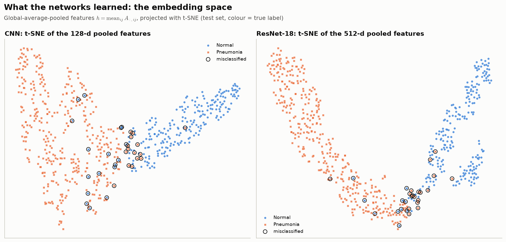
Embedding space: t-SNE of the pooled features; misclassified X-rays are ringed.
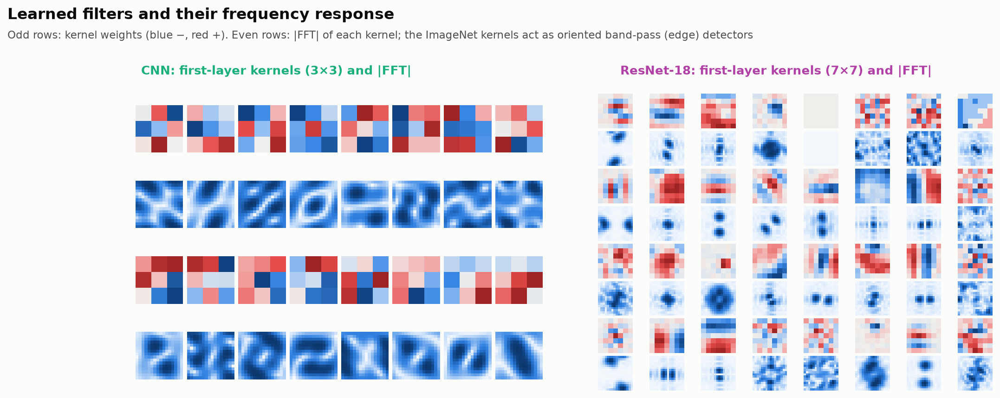
First-layer filters and their Fourier magnitude: what the networks look for at the pixel level.
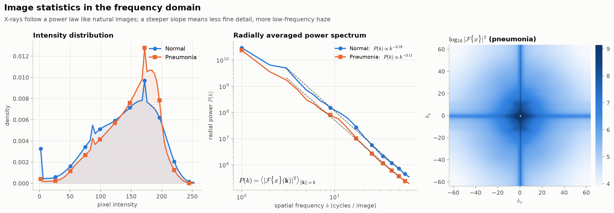
The images in the frequency domain: intensity histograms and the power-law spectrum \(P(k)\propto k^{-\beta}\).
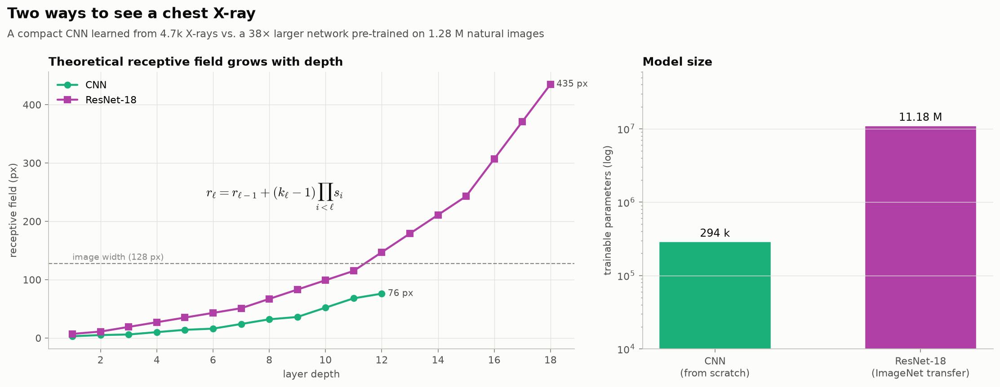
Receptive fields and model size: how far each network can "see" at every layer.
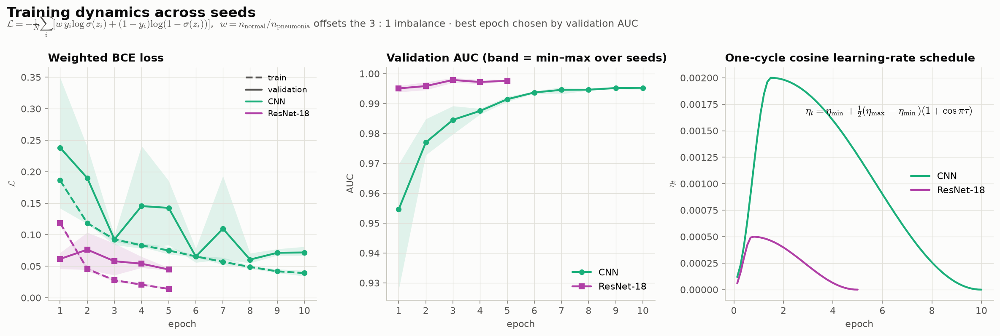
Training dynamics over seeds with a one-cycle cosine schedule.
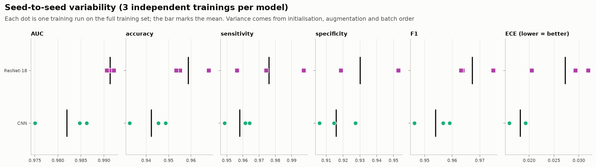
Seed-to-seed variability of every metric.
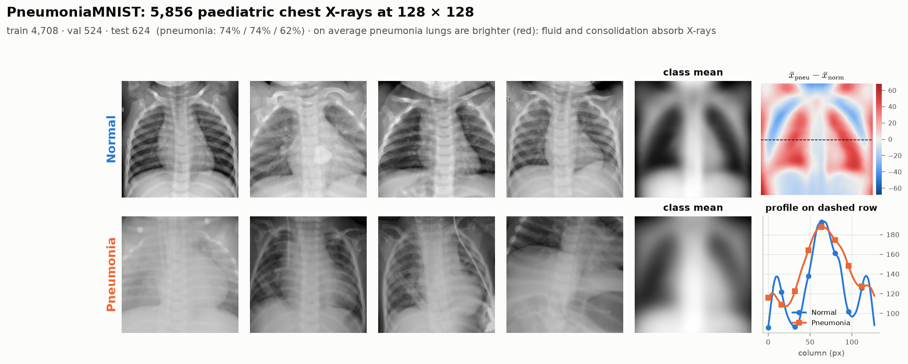
The data: examples, class means and where pneumonia images differ on average.
To upload your own X-ray and see Grad-CAM and uncertainty live, open the Streamlit demo.
Drag the slider: the operating point moves along each ROC curve; hover for the confusion counts.
Browse ResNet-18 Grad-CAM maps for correct and incorrect test cases.
The 512-d ResNet-18 features of all test X-rays, projected onto three principal components (drag to rotate).
Limitations
All images are paediatric (ages 1–5) from a single centre (Guangzhou Women and Children's Medical Center); performance on adults or other hospitals and scanners is unknown and likely lower.
Images are down-sampled to 128 × 128 px, which discards fine detail a radiologist would use.
The MedMNIST test split is the original Kermany test set, whose class balance differs from the training data; patient overlap between splits cannot be fully ruled out from the public release.
Saliency maps show what the model used, not what is clinically correct, and can highlight shortcuts such as text markers or patient positioning.
MC dropout gives an approximate, not calibrated, measure of epistemic uncertainty.
Source code
The full implementation, notebook and trained weights are kept in a private repository. Access is available on request to professors, reviewers and collaborators via LinkedIn or GitHub.